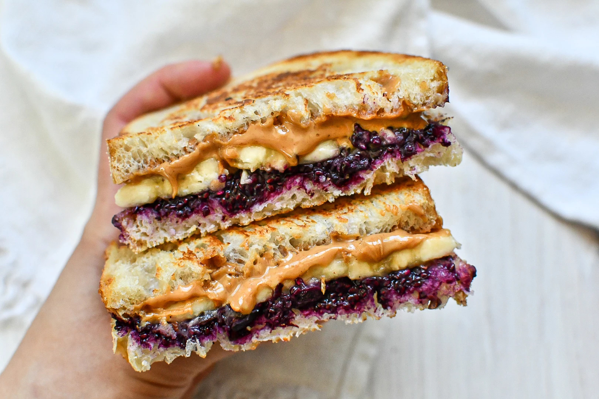

Let's make a PB&J Sandwich!

What is PB&J ?
If you're unsure, ask any child what a PB&J is! Peanut Butter and Jelly sandwiches are a favorite amongst children (and many adults, too)!
This is likely because the quick and easy treat is sweet, yet packed with good protein!
The ease with wich PB&J can be made, even by a hungry child, makes it one of the most popular foods that can be whipped up in a matter of minutes.
There are lots of differents ways people like to make their PB&Js, so let's just go over a very basic recipe.
Ingredients
- Peanut Butter (your choice of smooth or chunky)
- Jelly, Jam, or Preserves (your choice, but I prefer jelly)
- Bread! (We should all be eating yummy Wheat bread, we can talk about White bread later)
Steps
There is no right way to put this quick and easy sandwich together, but for this example I will tell you my preferred way!
- Gather up all the ingredients you will need and a clean plate
- With two slices of bread on your plate, begin to apply Peanut Butter to one of them
- With your Peanut Butter applied, now begin to apply your Jelly to the other slice of bread
- With both slices of bread now covered with Peanut Butter and Jelly respectively, we will join the slices!
- Gently combine both slices of bread with the Peanut Butter and Jelly facing each other.
- Once joined, you will have a delectable treat to enjoy and provie yourself with some much needed energy!